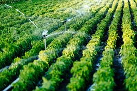

HuertoHogar es una tienda online dedicada a llevar la frescura y calidad de los productos del campo directamente a la puerta de nuestros clientes en Chile. Con más de 6 años de experiencia, operamos en más de 9 puntos a lo largo del país, incluyendo ciudades clave como Santiago, Puerto Montt, Villarica, Nacimiento, Viña del Mar, Valparaíso, y Concepción. Nuestra misión es conectar a las familias chilenas con el campo, promoviendo un estilo de vida saludable y sostenible.
Nuestra misión es proporcionar productos frescos y de calidad directamente desde el campo hasta la puerta de nuestros clientes, garantizando la frescura y el sabor en cada entrega. Nos comprometemos a fomentar una conexión más cercana entre los consumidores y los agricultores locales, apoyando prácticas agrícolas sostenibles y promoviendo una alimentación saludable en todos los hogares chilenos.
Nuestra visión es ser la tienda online líder en la distribución de productos frescos y naturales en Chile, reconocida por nuestra calidad excepcional, servicio al cliente y compromiso con la sostenibilidad. Aspiramos a expandir nuestra presencia a nivel nacional e internacional, estableciendo un nuevo estándar en la distribución de productos agrícolas directos del productor al consumidor.